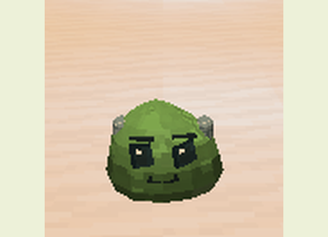
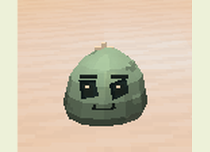
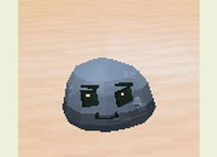
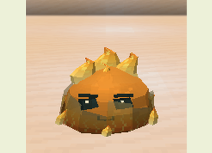
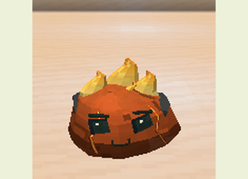
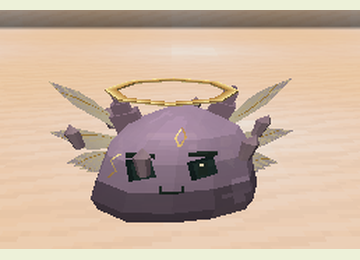

Bosses e lacaios
Guia do mod · Estruturas · Balanceamento
Encontre uma das quatro arenas naturais e use seu item de ritual no altar central correspondente. A estrutura nasce sem boss, com piso de 17×17 e seis blocos livres. O item é consumido somente quando a invocação é aceita; o altar fica ocupado até a morte do boss e pode ser reutilizado. As arenas são protegidas contra alterações dos jogadores.
A dificuldade precisa estar acima de Pacífica. O local deve ter espaço livre, sem líquidos ou outro boss vivo carregado em 96 blocos. Os sinais no chão, a pulsação do corpo e os sons indicam a preparação dos golpes.
Rei Gelatinoso

Vida: 290 · Armadura: 7 · Fases: duas · Recompensa: duas Geleias Reais.
Fabrique uma Coroa Gelatinosa com Núcleo de Slime, geleia reprodutiva e quatro barras de ouro. Use-a no altar da Corte Real, no Overworld.
O Rei alterna impacto após salto, invocação de lacaios, cruz e anel. Seus golpes aplicam Lentidão I e arremessam o alvo para cima. A segunda fase começa na metade da vida e permanece mesmo que ele seja curado.
| Lacaio | Aparência | Função |
|---|---|---|
| Guarda |  |
Aproxima-se e luta corpo a corpo; aplica Fraqueza II. |
| Curandeiro |  |
Recupera nove pontos de vida do Rei por pulso, com alcance e visão livre. |
| Cuspidor |  |
Ataca de longe e aplica Lentidão I e Veneno I. |
O Rei mantém até seis lacaios. Priorize os curandeiros para reduzir sua recuperação.
Coração Magmático

Vida: 320 · Armadura: 6 · Fases: duas · Recompensa: dois Fragmentos Ígneos.
Fabrique um Braseiro Magmático com Núcleo de Slime, Essência Elemental, dois cremes de magma e dois pós de blaze. Use-o no altar do Santuário Elemental.
Alterna anel, erupção, cruz e erupções gêmeas. Seus golpes incendeiam e aplicam Fome II. A segunda fase começa na metade da vida; água reduz seu dano.
| Lacaio | Aparência | Função |
|---|---|---|
| Cuspidor de Fogo |  |
Mantém distância e lança brasas. |
| Slime Bomba de Magma |  |
Persegue, acende um pavio e explode, causando Cegueira I e Fome II. |
O Coração mantém até quatro lacaios. Afaste-se da bomba quando ela começar a pulsar. A explosão atinge alvos próximos sem destruir o terreno.
Colosso Cristalino

Vida: 400 · Armadura: 10 · Fases: duas · Recompensa: dois Estilhaços Prismáticos.
Fabrique um Sigilo Cristalino com Núcleo de Slime, dois Fragmentos Cristalinos, dois fragmentos de ametista e um diamante. Use-o no altar da Caverna Cristalina.
Alterna barragens de estilhaços, onda, cruz e anel. Aplica Lentidão III e Fadiga de Mineração II. A segunda fase começa na metade da vida. Durante a preparação ele reforça a defesa; aproveite a recuperação para atacar.
Slime Primordial

Vida: 540 · Armadura: 8 · Fases: três · Recompensa: duas Essências Primordiais.
Fabrique um Selo Primordial com Geleia Real, Fragmento Ígneo, Estilhaço Prismático, Estrela do Nether e Tabuleta Antiga. Use-o no altar da Câmara Ancestral no End. Essa câmara também fornece a tabuleta.
Alterna onda, anel de fogo, estilhaços, cruz e ruptura orbital. Seus golpes aplicam Fraqueza I e Wither I; estilhaços e orbital também aplicam Levitação I. As fases mudam em dois terços e um terço da vida.

Invoca até três Ecos Ancestrais, versões menores que voam e atacam de perto.
Preparação e recompensas
Os interiores dos anéis, cruzes e rupturas orbitais também causam dano. Use distância além do contorno, altura ou cobertura conforme o ataque. Fases aumentam o dano, e a preparação de um golpe conserva seus parâmetros até terminar. Os valores exatos estão em balanceamento.
As recompensas exigem vitória com crédito de jogador. Lacaios não deixam recompensas. Troféus permitem fabricar equipamentos, melhorar a incubação e alcançar as metamorfoses avançadas.